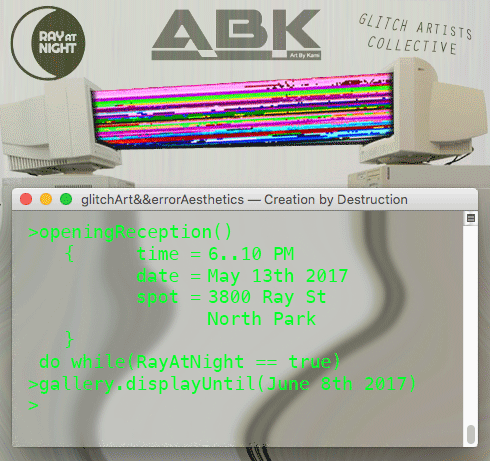

Announcements
Announcements
Announcements
Announcements

Join Creation by Destruction at 3800 Ray St, North Park as part of the Ray At Night Art Walk on Saturday, May 13th, 2017
Find it on FacebookABK_Topartists & North Park Ray At Night present C҉re͏atįon b̀y͘ ̛Des̨truct̕ion ͢ explorations of g̕lit̀ćhA͟r͘t̵ && ͘er̢ror͠Aes̸t̡hetic͠s featuring work from Creation by Destruction//ClifP co-hosted by Artbykami, Kent Karras Chiropractic Inc., North Park's Ray at Night & Glitch Artists Collective.
OPENING RECEPTION:
3800 Ray St
Ray At Night Art Walk
North Park
Saturday, May 13th, 2017
6-10PM
Free and open to all ages.